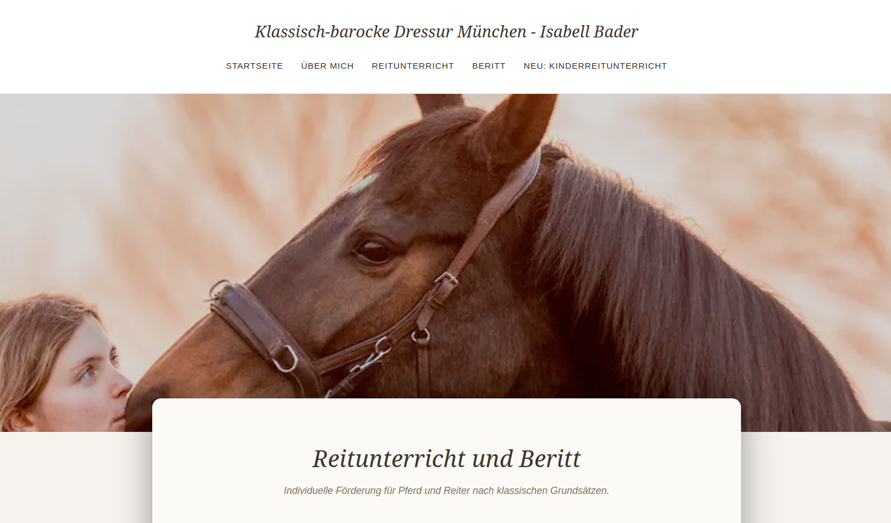
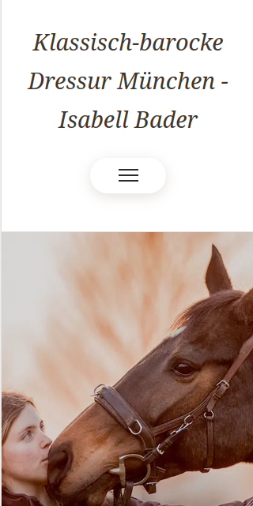

Klassisch-barocke
Dressur München
Eine persönliche Website für Isabell Bader, die Kompetenz, Vertrauen und die individuelle Arbeit mit Pferd und Reiter in den Mittelpunkt stellt.

Eine Website, die Persönlichkeit vermittelt.
Die Website sollte die persönliche Arbeit von Isabell Bader als Reitlehrerin und Bereiterin authentisch widerspiegeln. Im Mittelpunkt stehen dabei nicht nur die angebotenen Leistungen, sondern vor allem die individuelle Ausbildung von Pferd und Reiter.
Der digitale Auftritt sollte bewusst nicht wie eine klassische Reitschul-Website wirken, sondern Ruhe, Qualität und Vertrauen vermitteln.
Viele Leistungen. Eine klare Struktur.
Das Angebot richtet sich an unterschiedliche Zielgruppen – vom Reitunterricht über Beritt und Lehrgänge bis hin zur Jungpferdeausbildung und der Arbeit mit anspruchsvollen Pferden.
Die Herausforderung bestand darin, diese unterschiedlichen Themen übersichtlich darzustellen, ohne die Website mit Informationen zu überladen.
Mehr Persönlichkeit.
Ruhig, persönlich und hochwertig.
Die Gestaltung setzt auf eine klare Typografie, großzügige Bildflächen und ausreichend Weißraum. Dadurch entsteht eine ruhige Atmosphäre, die zur klassischen Reitkunst und zur persönlichen Arbeitsweise passt.
Die Inhalte wurden so strukturiert, dass Besucher schnell verstehen, welche Leistungen angeboten werden und welcher Ansatz hinter der Arbeit steht.

- Individuelles Webdesign
- Responsive Gestaltung
- Klare Leistungsstruktur
- Optimierung für mobile Endgeräte
- SEO-orientierte Seitenstruktur
- Kontaktmöglichkeiten und Nutzerführung
Ein digitaler Auftritt, der die Persönlichkeit hinter dem Angebot sichtbar macht.
Die Website verbindet eine klare Nutzerführung mit einer persönlichen und hochwertigen Gestaltung. Besucher erhalten schnell einen Überblick über das Angebot und gleichzeitig einen authentischen Eindruck von der Arbeitsweise.
→ Projekt ansehen